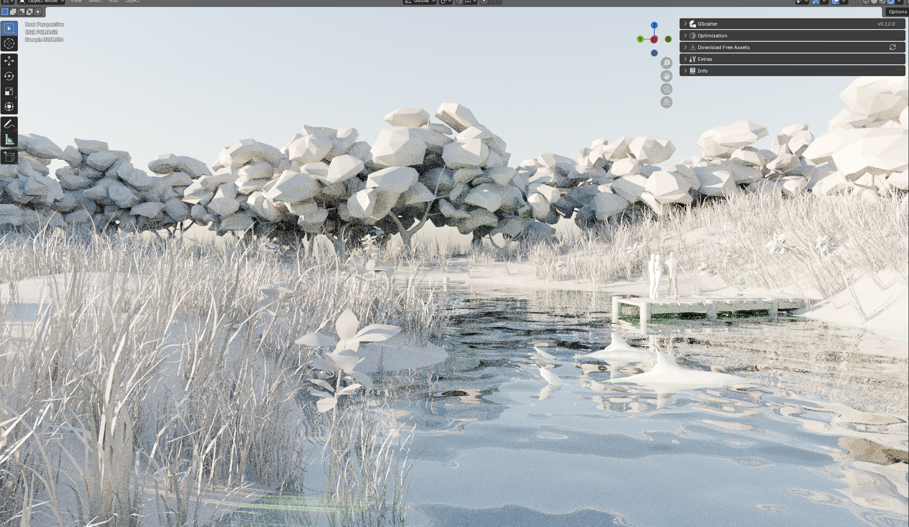

← All projects
Blender Blender Add-ons
Case Study
Matawan Creek
Overview: Matawan Creek is a commissioned 3D environment recreation of Matawan Creek, New Jersey — the site of the 1916 shark attacks that inspired Jaws — produced for a YouTube documentary. The project required historically grounded environment design, optimized real-time-friendly assets, and fully rigged, animated shark models delivered to a client's production timeline.
Key Features: Client-Commissioned Work · Rigged & Animated Shark Models · Procedural Terrain Sculpting · GScatter Foliage Distribution · Water Shader Development

Contributions
- Modeled, rigged, and animated looping swim cycles for a great white shark and bull shark.
- Procedurally generated base terrain, then manually sculpted it to match Matawan Creek's real geography using photo reference.
- Distributed randomized foliage across the environment using GScatter for a naturalistic result.
- Optimized vegetation with alpha plane cards for ground cover and stylized tree replacements to reduce polygon load.
- Modeled and scaled historically accurate dock structures against reference imagery.
- Developed a water shader for the creek surface.
Impact
- Delivered a historically grounded, client-ready environment on schedule for a commissioned documentary production.
- Balanced visual fidelity with real-time performance through optimized foliage and geometry techniques.
Quick facts
Client-commissioned work · YouTube documentary
Team
Solo 3D production